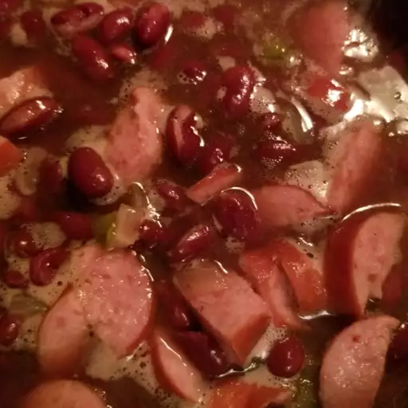

Red Beans and Rice Recipe

How to make Red Beans and Rice
Red beans and rice are a southern staple! Tons of flavor and protein just make sure to be near a toilet
Ingredients
- 1 pound smoked sausage, sliced
- 1 onion, chopped, divided
- 1 green bell pepper, chopped, divided
- 1 jalapeno pepper, finely diced, divided
- 2 cups water
- 2 cubes chicken bouillon
- 1 tablespoon salt-free garlic and herb seasoning (such as Mrs. Dash®)
- 1 tablespoon Cajun seasoning blend
- 1 teaspoon red pepper flakes
- 1 bay leaf
- 3 (16 ounce) cans kidney beans, drained and rinsed
- 1 (14.5 ounce) can diced tomatoes
- salt to taste
- 3 cups cooked white rice